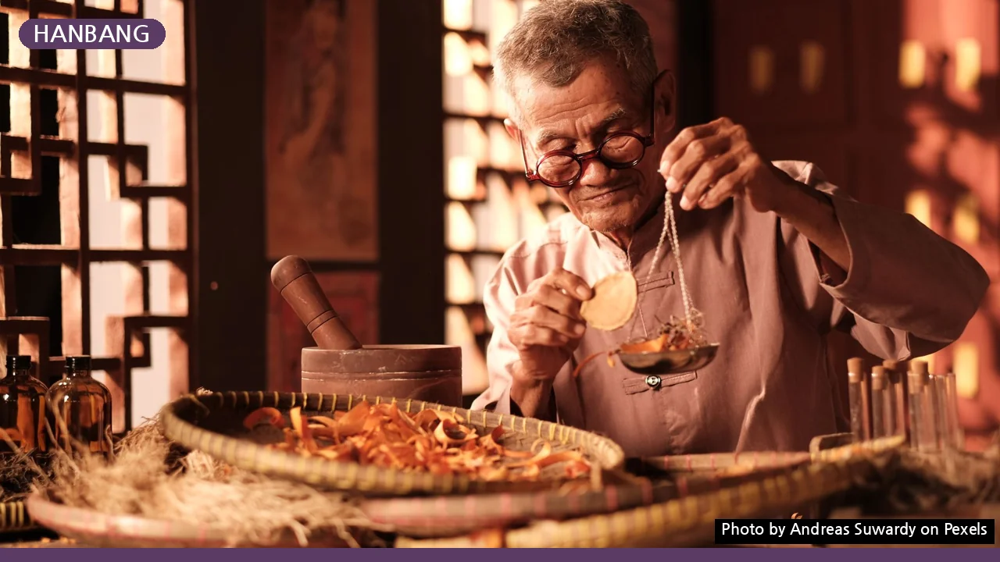
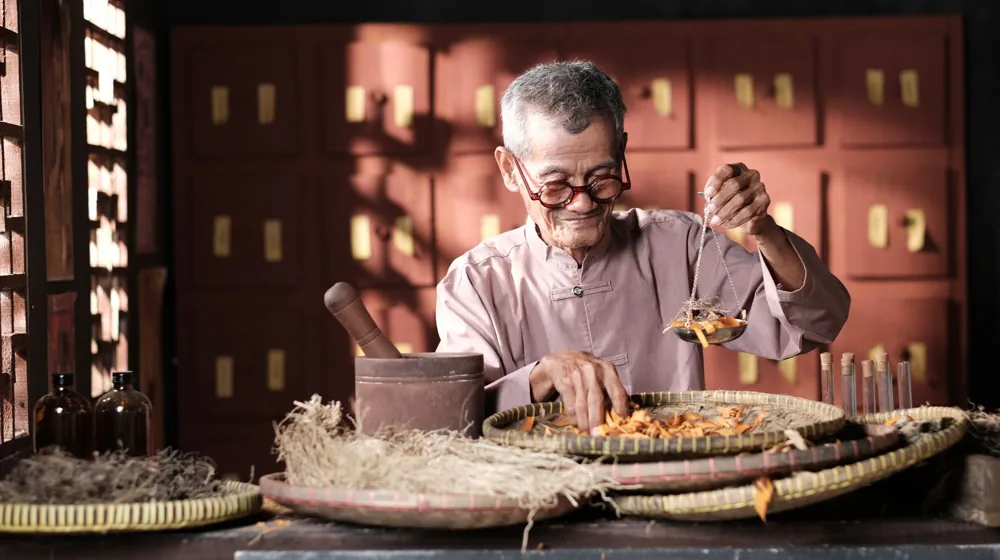

한방 힐링 프로그램 예약, 헷갈리지 않게 5단계로 끝내세요
사진: Andreas Suwardy / Pexels (무료 이미지, 출처 표기)
한방 힐링 프로그램, 어디서부터 시작할까요?

한방 힐링 프로그램 예약을 시작하려는데 어디부터 알아봐야 할지 막막하신가요? 다양한 프로그램 종류부터 실제 예약 절차, 준비물까지 이 글 하나로 모든 궁금증을 해결하고 자신 있게 다음 단계를 진행할 수 있도록 도와드리겠습니다.
나에게 맞는 한방 힐링 프로그램 고르는 법
한방 힐링 프로그램은 신체적 회복, 정신적 안정, 특정 질환 관리 등 다양한 목적에 맞춰 구성됩니다. 단기 체험부터 장기 체류형까지 폭넓게 제공되므로, 자신의 필요와 상황에 맞는 프로그램을 선택하는 것이 중요합니다. 2026년 11월 기준으로 주요 한방 힐링 프로그램은 다음과 같은 특징을 가집니다.
프로그램 선택 시에는 자신이 원하는 힐링의 깊이와 기간, 예산을 고려해야 합니다. 한국관광공사에서 제공하는 웰니스 관광 프로그램 정보를 참고하면 검증된 프로그램을 쉽게 찾아볼 수 있습니다.
인기 한방 힐링 프로그램 예약, 놓치지 않는 3가지 팁
인기 있는 한방 힐링 프로그램은 조기에 마감되는 경우가 많습니다. 만족스러운 경험을 위해 다음 3가지 팁을 활용해 보세요.
- 사전 정보 탐색: 프로그램별 특징, 후기, 시설 사진 등을 미리 확인하여 기대치에 맞는 곳을 선정합니다. 공식 홈페이지 외에도 블로그나 여행 커뮤니티에서 실제 이용자들의 경험담을 참고하는 것이 좋습니다.
- 예약 오픈 시기 확인: 일부 인기 프로그램은 특정 시기에만 예약이 열리거나, 조기 예약 할인 혜택을 제공하기도 합니다. 관심 있는 프로그램의 예약 가능 기간을 미리 파악하고 알림 설정을 해두면 좋습니다.
- 대안 프로그램 고려: 원하는 프로그램이 마감되었을 경우를 대비해 2~3곳의 대안 프로그램을 미리 정해두면 좋습니다. 유사한 서비스나 콘셉트를 제공하는 곳이 있는지 찾아보세요.
한방 힐링 프로그램 예약 절차, 5단계로 끝내기
대부분의 한방 힐링 프로그램 예약은 온라인을 통해 편리하게 진행할 수 있습니다. 다음 5단계 절차를 따르면 초보자도 쉽게 예약할 수 있습니다.
- 1단계: 프로그램 검색 및 선택
온라인 검색엔진이나 한국관광공사, 각 지자체 관광 정보 사이트를 활용하여 관심 있는 프로그램을 찾습니다. 프로그램명, 위치, 기간, 포함된 서비스 등을 기준으로 비교하여 마음에 드는 곳을 선택합니다.
- 2단계: 공식 홈페이지 또는 예약 플랫폼 접속
선택한 프로그램의 공식 홈페이지나 연계된 예약 플랫폼(예: 네이버 예약, 여기어때, 야놀자 등)에 접속합니다. 외부 플랫폼을 이용할 경우, 후기나 평점을 함께 확인하여 신뢰도를 검증하는 것이 좋습니다.
- 3단계: 날짜 및 옵션 선택
희망하는 방문 날짜와 시간, 참여 인원, 추가 옵션(식단 변경, 특정 치료 포함 등)을 선택합니다. 이때 프로그램에 따라 최소 인원 제한이나 특정 요일에만 운영되는 경우가 있으니 주의 깊게 확인해야 합니다.
- 4단계: 결제 및 예약 확정
선택한 프로그램과 옵션에 따라 결제를 진행합니다. 신용카드, 계좌이체 등 다양한 결제 수단을 제공하며, 결제가 완료되면 예약 확인 문자가 이메일 또는 휴대전화로 발송됩니다. 예약 번호와 상세 정보를 반드시 보관하세요.
- 5단계: 예약 전 최종 확인
방문 며칠 전, 예약된 날짜와 시간을 다시 한번 확인하고, 필요한 경우 프로그램 운영 기관에 직접 문의하여 최종 확인을 받는 것이 좋습니다. 교통편, 주차 여부, 준비물 등도 함께 점검합니다.
정확한 예약 절차와 세부 사항은 각 프로그램의 공식 홈페이지에서 다시 확인하시길 권장합니다.
예약 전 꼭 확인해야 할 준비물과 주의사항
한방 힐링 프로그램을 더욱 효과적으로 즐기기 위해서는 몇 가지 준비물과 주의사항을 숙지하는 것이 좋습니다.
- 개인 세면도구 및 의류: 수건, 칫솔 등 기본 세면도구는 제공되지만, 개인 취향에 맞는 제품을 챙기는 것이 좋습니다. 편안한 옷차림이나 가벼운 운동복은 명상이나 간단한 운동 프로그램에 도움이 됩니다.
- 건강 상태 정보: 만성 질환, 알레르기, 복용 중인 약이 있다면 예약 시 또는 프로그램 시작 전 반드시 담당자에게 알려야 합니다. 이는 안전하고 효과적인 힐링을 위한 필수적인 정보입니다.
- 휴식과 디지털 디톡스: 많은 한방 힐링 프로그램이 디지털 기기 사용 자제를 권장합니다. 온전한 휴식을 위해 스마트폰보다는 책이나 일기장 등을 준비해 보세요.
- 금연/금주 정책: 대부분의 힐링 프로그램 시설은 금연 및 금주를 엄격히 시행합니다. 이는 다른 참가자들의 편안한 휴식을 위해서도 중요하니 반드시 지켜야 합니다.
각 프로그램별로 요구하는 특정 준비물이 있을 수 있으므로, 예약 확정 시 안내되는 내용을 꼼꼼히 확인하시기 바랍니다.
자주 묻는 질문(FAQ)과 답변
한방 힐링 프로그램을 처음 접하는 분들이 자주 묻는 질문들을 정리했습니다.
Q: 한방 힐링 프로그램은 의료 행위인가요?
A: 대부분의 한방 힐링 프로그램은 예방 및 건강 증진을 목적으로 하는 웰니스 프로그램입니다. 진단 및 치료를 목적으로 하는 전문 의료 행위와는 다릅니다. 하지만 일부 프로그램에 한의사의 상담이나 보조적인 한방 처치(예: 간단한 침, 뜸)가 포함될 수 있으며, 이 경우 의료법에 따라 정식 한의원에 연계하여 진행됩니다.
Q: 아이나 노인도 참여할 수 있나요?
A: 프로그램마다 참여 연령 제한이 다릅니다. 가족 단위 프로그램이나 실버 세대를 위한 맞춤형 프로그램도 있으니, 예약 전 연령 제한 여부와 프로그램 내용을 반드시 확인해야 합니다. 개인의 건강 상태에 따라 참여가 어려울 수도 있으니 사전에 문의하는 것이 좋습니다.
Q: 식단은 어떻게 제공되나요?
A: 대부분의 한방 힐링 프로그램은 건강식을 제공하며, 유기농 재료를 사용하거나 체질별 식단을 제공하는 곳도 있습니다. 알레르기나 특정 식단(채식 등)이 필요하다면 예약 시 미리 요청해야 합니다. 추가 비용이 발생할 수도 있습니다.
🔗 이 글도 함께 보면 좋아요: 한방 족욕, 처음인데 뭐부터? 초보자를 위한 핵심 가이드
관련 추천 상품
이 포스팅은 쿠팡 파트너스 활동의 일환으로, 이에 따른 일정액의 수수료를 제공받습니다.